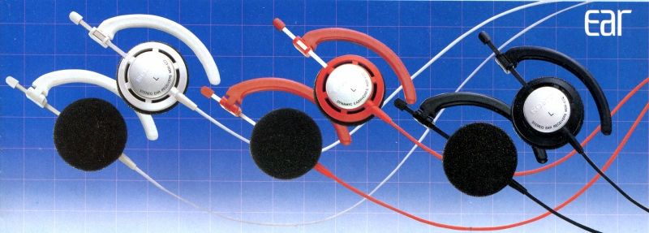
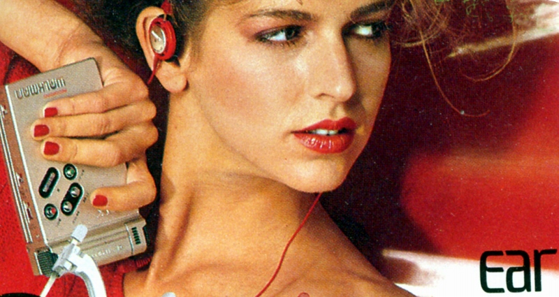
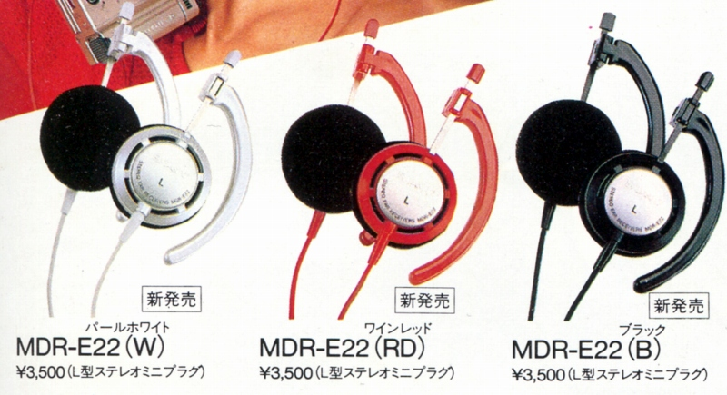
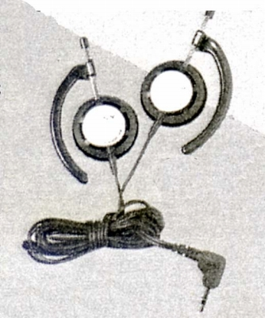
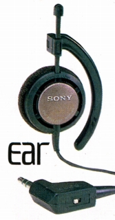
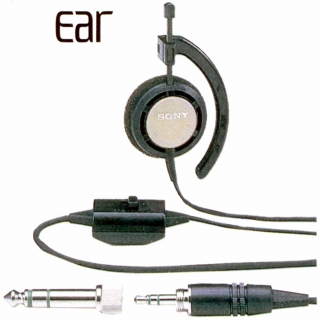
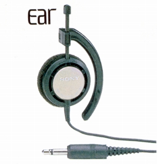

MDR-E22




■価格 3,500円
■型式 オープンエアダイナミック型
■振動板 23�o
■インピーダンス 25Ω
■再生周波数帯域 20-20,000Hz
■許容入力 100mW
■感度 98ｄB/mW
■コード 1ｍ ステレオミニプラグ
■重量 22g（コード含まず）
■発売 1983年
■販売終了 1985年頃
■備考 耳掛型
ワインレッド、パールホワイト、ブラック仕上あり
兄弟モデルにモノラルタイプのE2WN、E2TV、E2LCがあるが、
感度や再生周波数などから使用ユニットはE22のものでは無く
E33のものと思われ、外装のみE22系統にしたものと思われる。

MDR-E2WM。1mコードのモノラル/R+L切替機構付きモデル。

MDR-E2TV。3mコードの音声主/副切替機構付きモデル。

MDR-E2ＬＣ。3mコードの付加機能なしのモノラルモデル。